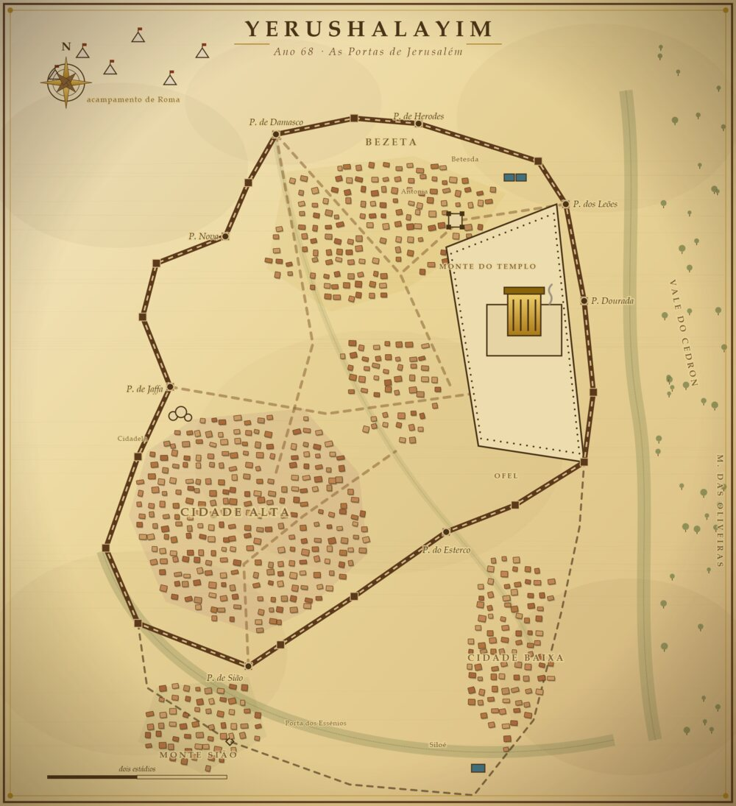

Fariseus
Os que esperam
Os mestres da Torá, a corrente do povo e das ruas. Toda Jerusalém fala de um mestre de Natzrat. Uns o seguem, outros o temem. Descubram quem ele é, antes que a cidade decida por vocês.
Jerusalém · os últimos anos do Segundo Templo
Uma caça ao tesouro pela Cidade Velha. Três caminhos, uma cidade, um segredo que ninguém quis dividir.
Roma esperava nas colinas. O Templo ainda respirava.
Por dentro, o povo se rasgava em três seitas. Cada uma segurava o seu pedaço da razão.
Nenhuma quis abrir a mão. Foi só isso que faltou.
Escolham um caminho
Os mestres da Torá, a corrente do povo e das ruas. Toda Jerusalém fala de um mestre de Natzrat. Uns o seguem, outros o temem. Descubram quem ele é, antes que a cidade decida por vocês.
Os sacerdotes do Templo, a casa que segura o altar. Mas alguém comprou o Sumo Sacerdote, e o ouro entra por uma porta sem guarda. Sigam o dinheiro até o fundo.
Os que pegaram em armas contra Roma, no grito de que não há senhor além de D'us. Agora um incêndio vai queimar o pão da cidade e entregar o povo à fome. Vocês têm até o anoitecer para deter os seus.
Como funciona
O que espera vocês

Batam às portas
Fiquem de olho no WhatsApp. A sua corrente e o dia chegam por lá. Andem.
Chamar seu grupo